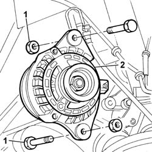
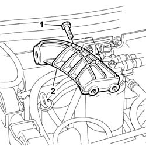
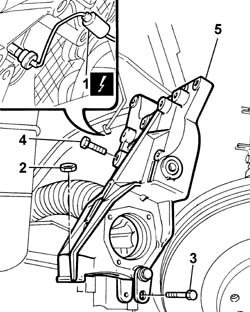

1008A44 RIGID REAR power unit MOUNTING - R.R.
- Path
- Procedures > 10 ENGINE > 1008 POWER UNIT SUPPORTS > 1008A power unit fastenings > 1008A44 RIGID REAR power unit MOUNTING - R.R.
- Kind
- repair procedure (removal / refitting; the operation number is the code)
- Applies to
- engines: 2.4 JTD 10V; all production periods
- Interactive page
- https://sloeber94.github.io/elrnDB-lThss/en/#/75460
Applies to: engines: 2.4 JTD 10V; all production periods
 Removing
Removing
 Refitting
Refitting- Position the vehicle on a lift.
- Open the boot and disconnect the negative battery terminal.
See in Op. 7040D50 ENGINE COMPARTMENT UPPER SOUND INSULATION SHIELD - R.R.
See in Op. 7055B54 PROTECTION/GUARD under engine - R.R.
See in Op. 4450B04 Right FRONT WHEEL (one) - R.R.
See in Op. 7055B42 FRONT WHEEL ARCH LINER (one), left or right - R.R.
See in Op. 7055B42 FRONT WHEEL ARCH LINER (one), left or right - R.R.
See in Op. 7055B64 Engine compartment DUST SEAL in front wheel arch (one), left or right - R.R.
See in Op. 2710A31 INTERMEDIATE DRIVE SHAFT - R.R.
See in Op. 1092G10 Engine components single drive BELT - R.R.
1. Undo the bolts fixing the alternator.
2. Disconnect the alternator electrical wiring.
3. Remove the alternator.
 | Description | Connector |
|---|---|---|
2 | Alternator | A010A |
| Description | Connector |
|---|---|---|
2 | Alternator | A010B |

Applies to: engines: 2.4 JTD 10V; all production periods
- Lower the lift.
1. Remove the alternator rear mounting bracket.

Applies to: engines: 2.4 JTD 10V; all production periods
- Position the hydraulic engine support under the oil sump in order to work safely.
1. Disconnect the electrical connection for the engine oil pressure sensor.
| Description | Connector |
|---|---|---|
1 | Insufficient engine oil pressure sensor | K030 |
2. Undo the nut fixing the support to the flexible mounting.
3. Undo the bolt fixing the support to the oil sump.
- Keep the spacers which are between the bolt and the sump.
4. Undo the bolts fixing the support to the cylinder block/crankcase.
5. Remove the intermediate driveshaft support which supports the engine.

Applies to: engines: 2.4 JTD 10V; all production periods
Refitting
Removing- Position the engine support which also supports the intermediate driveshaft in the special housing.
- Tighten the bolts fixing the support to the engine support to the cylinder block/crankcase to torque.
 | Value - daNm | Fastening | Component | Ø |
|---|---|---|---|---|
. | 5 | Bolt | RIGID REAR SUPPORT POWER UNIT | M10 X 1.25 |
- Tighten the bolt fixing the support to the oil sump to torque.
| Value - daNm | Fastening | Component | Ø |
|---|---|---|---|---|
. | 2.5 | Bolt | RIGID REAR SUPPORT POWER UNIT | M8 |
- Tighten the nut fixing the engine support to the flexible mounting on the chassis to torque.
| Value - daNm | Fastening | Component | Ø |
|---|---|---|---|---|
. | 5 | Nut | RIGID REAR SUPPORT POWER UNIT | M10 X 1.25 |
- Connect the electrical connection for the engine oil pressure sensor.
- Fit the alternator mounting bracket tightening the bolts fixing it to the cylinder block/crankcase to torque.
| Value - daNm | Fastening | Component | Ø |
|---|---|---|---|---|
. | 5 | Bolt | FRONT ALTERNATOR SUPPORT | M10 |
- Fit the alternator assembly and tighten the bolts fixing it to the mounting.
| Value - daNm | Fastening | Component | Ø |
|---|---|---|---|---|
. | 5 | Nut | ALTERNATOR ASSEMBLY | M10 X 1.25 |
| Value - daNm | Fastening | Component | Ø |
|---|---|---|---|---|
. | 7 | Nut | ALTERNATOR ASSEMBLY | M12 X 1.25 |
- Connect the alternator electrical wiring.
| Description | Connector |
|---|---|---|
. | Alternator | A010A |
| Description | Connector |
|---|---|---|
. | Alternator | A010B |
See in Op. 1092G10 Engine components single drive BELT - R.R.
See in Op. 2710A31 INTERMEDIATE DRIVE SHAFT - R.R.
See in Op. 7055B64 Engine compartment DUST SEAL in front wheel arch (one), left or right - R.R.
See in Op. 7055B42 FRONT WHEEL ARCH LINER (one), left or right - R.R.
See in Op. 4450B04 Right FRONT WHEEL (one) - R.R.
See in Op. 7055B54 PROTECTION/GUARD under engine - R.R.
- [7055B04]
See in Op. 7040D50 ENGINE COMPARTMENT UPPER SOUND INSULATION SHIELD - R.R.
- Connect the battery terminal.
Topics linked from this page (7)
- 1092G10 Engine components single drive BELT - R.R.
- 2710A31 INTERMEDIATE DRIVE SHAFT - R.R.
- 4450B04 Right FRONT WHEEL (one) - R.R.
- 7040D50 ENGINE COMPARTMENT UPPER SOUND INSULATION SHIELD - R.R.
- 7055B42 FRONT WHEEL ARCH LINER (one), left or right - R.R.
- 7055B54 PROTECTION/GUARD under engine - R.R.
- 7055B64 Engine compartment DUST SEAL in front wheel arch (one), left or right - R.R.